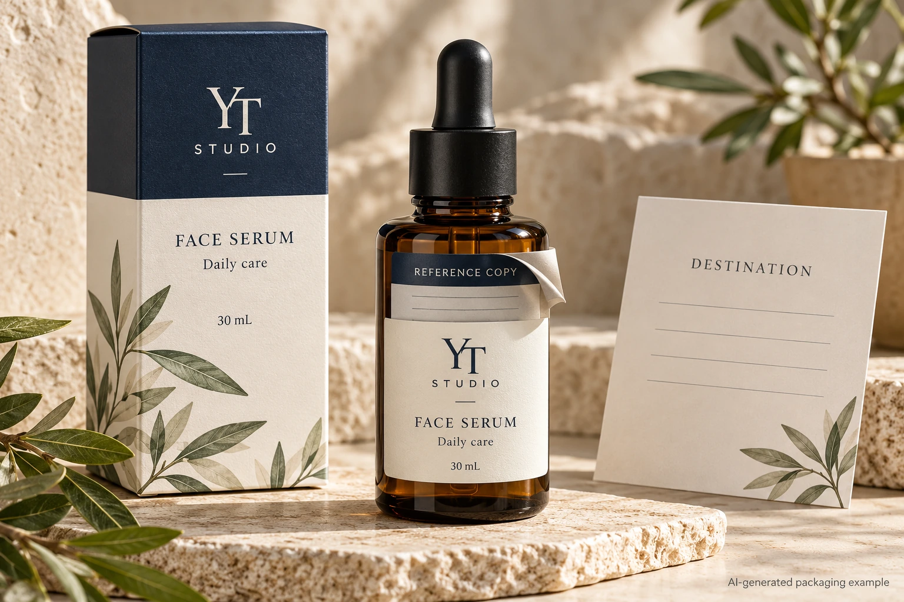
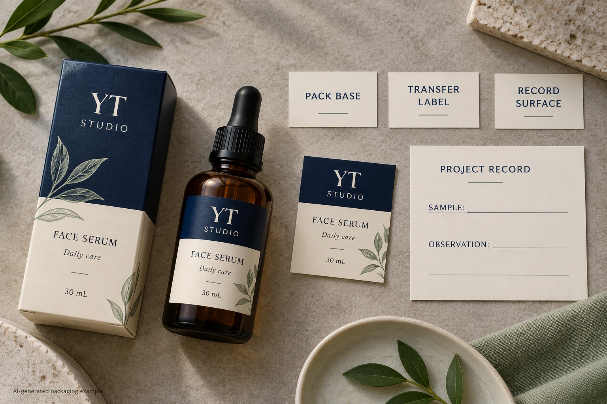

A detachable reference label can look convincing on a serum bottle and still leave a purchasing question unanswered: where must the detached piece stick next? Approve the original pack and the transfer destination as two separate uses. A clean peel is only the middle of that journey.
For a brand packaging manager, the missing decision is often the construction brief. Does the small piece move to a paper project record, another package or an entirely different surface? What information must remain on the bottle? Decide those points before asking for a piggyback label quotation. Extra reading space and a transferable label are different functions.

Draw the journey before naming the stock
Start with the pack as supplied. Mark the complete label, the piece that the user removes and the information that remains after removal. Give the removable piece an explicit purpose. A reference-copy field for an internal record is different from essential product wording that must stay available on the pack.
Then name the second destination precisely. “Sticks to paper” leaves too much open if the actual destination is a coated record card, a protective sleeve or a textured folder. Supply the destination itself where possible, including the relevant finish. Ask the receiving team how it will store and handle that record.
Avery Dennison's custom label constructions guide, published in 2021, describes piggyback structures using multiple adhesive and liner layers so a label or part of it can be reapplied elsewhere. That establishes a construction family. It does not establish the appropriate adhesive, current availability or performance for your bottle and destination.
If the requirement is to open additional panels and keep reading them on the bottle, use the expanded-content label guide for that earlier choice. Do not purchase a transfer function merely because the mockup has two layers.
Separate the three interfaces
There are three questions to put to the construction supplier. Can the complete supply be applied to the original pack? Can the intended piece be removed in the intended way? Can that piece then serve its purpose on the identified destination?
Ask which layer stays with which surface after removal. A sketch with layer names is more useful than referring to everything as the backing. Have the converter identify the relevant face, adhesive, release interface and permanent base in its own proposed construction. Procurement should preserve that reference without inventing a laminate recipe.
Keep removal timing and handling in the brief. A piece moved during a controlled packing task may face a different journey from one removed much later by an end user. Record what is actually required and ask the technical parties to define relevant sample conditions. This guide supplies no universal dwell time or second-bond strength.
Use a two-destination sample record
The following is an editorial worksheet for commissioning and reviewing a sample. It is not a material test standard.
| Stage | Input to identify | Observation and decision |
|---|---|---|
| Original pack | Bottle surface, filled-pack condition and base-label reference | Does the proposed supply represent the first use? |
| Removal | Intended removable piece, grip area and user sequence | Does the correct piece separate while the required base stays? |
| Transfer | Actual destination, its finish and placement area | Can the transferred piece be evaluated on the intended surface? |
| Retained information | Approved bottle wording and copied reference fields | Are both records understandable after separation? |
| Subsequent handling | Storage, contact and required period defined by the owner | What evidence is still needed for the second use? |
First complete the inputs with the brand and receiving team. Obtain an identifiable construction proposal and let the supplier specify a relevant sample evaluation. Follow the intended sequence using representative surfaces. Record each stage separately, including which parts of the sample differ from production.
Do not record a general pass when only the peel was observed. If the second destination was unavailable, the second use remains unresolved. If the base comes away with the transfer piece, send that observation and the sample identity back to the converter rather than silently changing the user's instructions.

Preserve a useful record on both sides
Have the brand's responsible reviewer decide what the removable copy is allowed to contain. A reference identifier can connect two records, but it should not create two contradictory versions of product information. If the copy contains variable information, ask how the base and detachable piece will remain associated through production and use.
Review the bottle after removal as well as before it. Check what the user can still read, whether any instruction now refers to a missing panel and whether the remaining presentation matches the approved intent. This is an information review; applicable wording obligations need the brand's own competent approval.
The destination record deserves its own reading check. A detached panel that fits physically but loses the context needed to interpret its reference has not completed the intended task. Mark the fields that the receiving person must recognize without having the bottle beside them.
Sometimes a separate label is the better arrangement
Consider a hypothetical project where an operator transfers a copy to one known card during packing. A piggyback proposal can be evaluated against a controlled journey, with both surfaces available for review.
Now consider a campaign asking users to transfer the piece to almost any personal container or notebook. That variation leaves a much broader second-use requirement. The brand may prefer a separate insert, a conventional reference sticker with a narrower stated use or no transfer function. More layers do not automatically produce a better purchase.
Hold the transfer-function release when the destination is unknown, the construction layers are unidentified or the required bottle information has not been reviewed after removal. A relevant sample should close a defined question, not decorate the approval meeting.
For a cosmetic label inquiry, provide the bottle, dimensions, quantity per artwork, marked detachable area and actual transfer destination. State what must remain on the pack and what the copied piece must do. The form prepares a message; send artwork and destination references separately by email or WhatsApp. Ask which construction and sample scope can be proposed for both journeys.